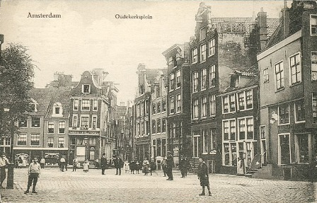

<Ámsterdam fue fundada como un pueblo de pescadores alrededor del siglo XIII. Se desarrolló alrededor de un embalse en el Río Amstel a finales del siglo XII. El nombre Amstelledamme apareció por primera vez en la concesión de peaje de Florencio V, Conde Holanda, con fecha 27 de octubre de 1275.>p> 